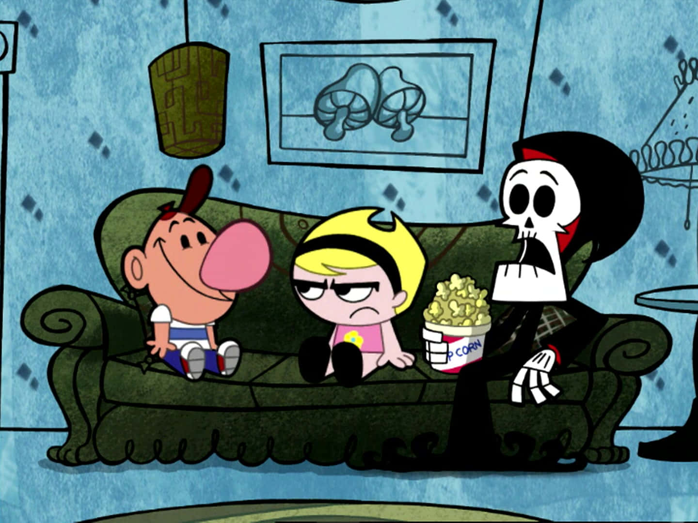

Los protagonistas


Billy
Billy, de Las sombrías aventuras de Billy y Mandy, es un niño hiperactivo, ingenuo y bastante torpe que suele actuar sin pensar. Se caracteriza por su enorme nariz, su risa escandalosa y su actitud despreocupada ante casi cualquier situación. Aunque no es muy inteligente, su inocencia lo convierte en un personaje gracioso y entrañable, ya que muchas veces termina metiéndose en problemas por sus ocurrencias o malentendidos. Su optimismo desmedido y su falta de miedo lo hacen el contrapunto perfecto a la seriedad de Mandy, aportando humor absurdo y situaciones caóticas a la serie.

Mandy
Es una niña seria, astuta y fría, conocida por su carácter dominante y su falta de paciencia con los demás, especialmente con Billy. Siempre mantiene la calma y tiene una mente estratégica, lo que le permite manejar cualquier situación a su favor. Su mirada penetrante y su actitud autoritaria la hacen temida y respetada por quienes la rodean.

Puro Hueso
Es un esqueleto que actúa como la figura de la Muerte, pero con un carácter irónico y a menudo nervioso. Aunque posee poderes sobrenaturales, se encuentra atrapado en la dinámica de Billy y Mandy, lo que lo convierte en víctima de sus travesuras y manipulaciones. A pesar de su rol temible, su vulnerabilidad y sarcasmo lo hacen cómico y entrañable.